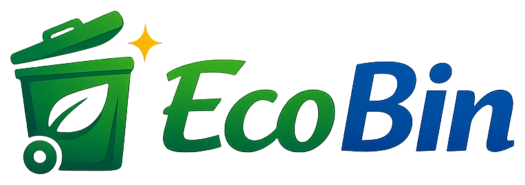

✦FRESH
EXTRA 01Duft-
Duft-
Frische
Ein angenehmer, deoähnlicher Duft für lang anhaltende Frische nach der Reinigung.
+ 5 €
Saubere Tonnen.
Besser für die Umwelt.
Nie wieder stinkende Mülltonnen. EcoBin reinigt deine Tonne hygienisch und geruchsfrei in wenigen Minuten – direkt vor deiner Haustür in Bad Vilbel.
SO FUNKTIONIERT'S
Du buchst online deinen Wunschtermin – in unter 2 Minuten.
Stelle deine Tonne nach der Leerung einfach wie gewohnt bereit.
Wir reinigen deine Tonne vor Ort – hygienisch, geruchsfrei und ohne aggressive Chemie.
Deine Tonne ist wieder sauber und einsatzbereit – du merkst kaum, dass wir da waren.
DEINE REINIGUNG PLANEN
Wähle deine Tonnen und deinen Wunschtermin – in unter 2 Minuten erledigt. Wir bestätigen dir die Anfrage innerhalb von 24 Stunden.
FÜR DAUERHAFT FRISCHE TONNEN
Nie wieder an die Reinigung denken müssen. Mit dem EcoBin Monatsabo ist deine Tonne automatisch immer frisch – und du sparst dabei dauerhaft 10 % auf jede Reinigung.
EcoBin Monatsabo
DAS EXTRA FÜR DEINE TONNE
Für den letzten Frische-Kick: Wähle diese Extras einfach direkt bei deiner Buchung dazu.
Ein angenehmer, deoähnlicher Duft für lang anhaltende Frische nach der Reinigung.
+ 5 €Hilft, Feuchtigkeit und Gerüche in der Biotonne zu reduzieren.
+ 5 €Wir bringen das Wasser für die Reinigung selbst mit. Ideal, wenn kein Außenwasseranschluss verfügbar ist.
+ 5 €HÄUFIGE FRAGEN
In der Regel ist deine Tonne innerhalb weniger Minuten wieder sauber und einsatzbereit – du merkst kaum, dass wir da waren.
Wir reinigen Rest-, Bio- und Papiertonnen aller gängigen Größen. Bei Bedarf sprich uns einfach im Hinweisfeld deiner Buchung an.
Wir reinigen mit Zitronensäure, Natron und Essig – bewährte, umweltfreundliche Hausmittel, die zuverlässig Kalk, Schmutz und Gerüche entfernen, ohne unnötig zu belasten.
Nur wenn kein Außenwasseranschluss verfügbar ist. Alternativ bringt unser Wasser-Service das Wasser einfach selbst mit.
Regen ist kein Problem – deine Tonne wird trotzdem gereinigt. Nur bei Unwetter oder Sturm verschieben wir den Termin kurzfristig und melden uns rechtzeitig bei dir.
KONTAKT
EcoBin ist dein lokaler Partner für Mülltonnenreinigung in Bad Vilbel (61118) – hygienisch, umweltfreundlich und direkt vor deiner Haustür, ohne dass du selbst Hand anlegen musst.
E-Mailecobin.badvilbel@gmail.com
ÖffnungszeitenMontag, Mittwoch, Freitag 15:00–18:00 Uhr
Samstag–Sonntag 13:00–20:00 Uhr
EinsatzgebietBad Vilbel · 61118
IMPRESSUM
EcoBin
Hollerweg 1
61118 Bad Vilbel
Kontakt
ecobin.badvilbel@gmail.com
Verantwortlich für den Inhalt
Mika Back
Hollerweg 1, 61118 Bad Vilbel
Gesetzlich vertreten durch Florian Back
DATENSCHUTZ
Verantwortlich
EcoBin – Mika Back
Hollerweg 1, 61118 Bad Vilbel
Gesetzlich vertreten durch Florian Back
ecobin.badvilbel@gmail.com
Welche Daten wir verarbeiten
Wenn du das Buchungsformular absendest, öffnet sich dein E-Mail-Programm mit deinen Angaben (Name, Adresse, Wunschtermin, optional E-Mail und Hinweis). Diese Daten erreichen uns erst, wenn du die E-Mail selbst abschickst. Wir nutzen sie ausschließlich, um deine Tonnenreinigung zu planen und dich zu kontaktieren.
Hosting
Diese Website wird über GitHub Pages (GitHub, Inc.) bereitgestellt. Beim Aufruf werden technisch notwendige Zugriffsdaten (z. B. IP-Adresse) durch den Hoster verarbeitet. Details: github.com/privacy.
Zahlung über PayPal
Für Zahlungen nutzen wir PayPal (PayPal (Europe) S.à r.l. et Cie, S.C.A., Luxemburg). Deine Zahlungsdaten werden direkt von PayPal verarbeitet – nicht von uns. Es gilt die Datenschutzerklärung von PayPal.
Cookies & Tracking
Diese Website setzt keine Tracking- oder Werbe-Cookies und bindet keine Analyse-Dienste ein.
Deine Rechte
Du hast das Recht auf Auskunft, Berichtigung und Löschung deiner bei uns gespeicherten Daten. Melde dich dafür einfach per E-Mail bei uns.
WASSER FÜR DEINE REINIGUNG
Für die Reinigung brauchen wir Wasser. Bitte wähle eine der beiden Möglichkeiten aus:
KLEINE EXTRAS, GROSSE FRISCHE
Wähle deine Extras – oder fahre ohne Änderung fort.
ZAHLUNG
Deine Buchung beträgt 10,00 €. Für echte Zahlungen muss hier noch PayPal oder Stripe verbunden werden.